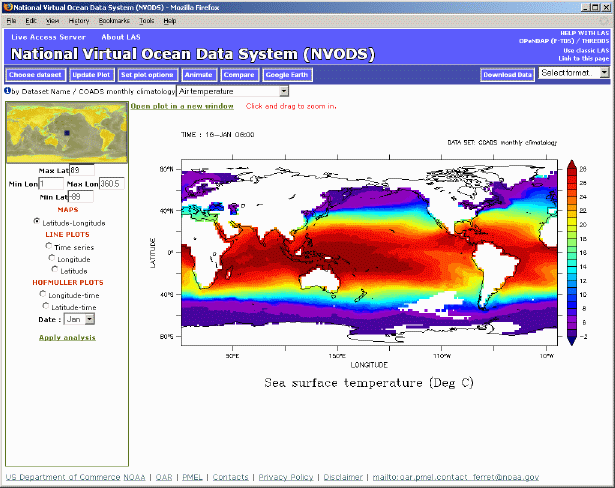

Introduction to LAS version 7 User Interface
Table of Contents:
- Introduction to the Live Access Server (LAS)
- LAS V6 capabilities not yet in V7
- Introduction and Overview to V7 user interface
- Getting images and Data from LAS
- Customizing what you get from LAS
- Comparing fields in LAS
- Animations (movies)
- Using Google Earth®
Welcome to the the Live Access Server (LAS). LAS is a highly configurable web server designed to provide flexible access to geo-referenced scientific data. It can present distributed data sets as a unified virtual data base through the use of OPeNDAP networking. Ferret is the default visualization application used by LAS, though other applications (Matlab, IDL, GrADS, ...) can also be used.
LAS enables the web user to:
- visualize data with on-the-fly graphics
- request custom subsets of variables in a choice of file formats
- access background reference material about the data (metadata)
- compare (difference) variables from distributed locations
- use Google Earth® to visualize data
- easily create animations
LAS enables the data provider to:
- unify access to multiple types of data in a single interface
- create thematic data servers from distributed data sources
- offer derived products on the fly
- remedy metadata inadequacies (poorly self-describing data)
- offer unique products (e.g. visualization styles specialized for the data)
- provide data access to gridded
as well as in-situ datasets
- For examples of LAS serving in-situ data, please see the Observing System Monitoring Center, or the Ocean Carbon Data Management System
The v7.0 UI: a transitional step
The v7.0 user interface, released as an Alpha product herein together with the Armstrong package, is a transitional step. The v7.0 UI incorporates new and more flexible programming paradigms (e.g. Ajax), while retaining major elements of the style of user interactions found in v6. With the release of v7.1 support for the v6/Armstrong UI will be dropped altogether (though the XML configuration files will be backward compatible to the greatest degree that is feasible). Significant advances will be incorporated in how the user will interact with the UI. The improvements to the UI are a work in progress at the present time. Suggestions and discussion are welcome at las_users@noaa.gov
In this initial release, the V7 UI is not quite as fully functional as is the V6 LAS user interface. For this reason, we have included a "Use Classic LAS" link on the right side of the V7 UI banner.
This link will take the user to the V6 UI so that the user may
- Utilize the V6 differencing capabilities
- Allow the user to request property-property plots
- Allow the user to request 4-d downloads
Getting images and data from LAS
Example: Create a 2D xy color plot of Sea Surface Temperature from the coads climatology dataset.
Step 1: Select the Coads climatology dataset:
Click on the "Choose Dataset" button:

The Dataset selection tree will open. Click on "Coads monthly climatology" and select "Air temperature":
LAS will then set the dataset to Coads climatology, select the Air temperature variable and will create a Latitude-Longitude map by default:

Using the zoom and pan reference map, the user may refine the latitude and longitude used to create the image or download data. As well, in the LAS V7 user interface, the output images are interactive. This means that the user can click and drag to zoom into a particular region on the map. The user is now free to begin interacting with LAS. For example, clicking "Time Series" on the left side of the interface will result in this image:
Customizing what you get from LAS
Example: How to modify the default values LAS uses to create an image.
In this example, we will change the specified color pallete for our AIRT plot, as well as eliminate the graticule lines. First, to change the output size of the plot, click the "Set plot options" button from the menu toolbar, as shown below:

This will open up a menu from which the user may change several options for plot creation. In the below - we have turned off the graticules option as well as selecting a different pallet:
After making the changes, and clicking on the "Close" button, the "Update plot" button will have changed color in the upper menu bar, like so:

When the "Update Plot" button is orange like above, it means that the current image is out of sync with something in the user interface. In this example, it is because the plot options have changed, but it could also happen if a different variable was selected, or a different time range was chosen, etc.
In our example, after changing the plot options, clicking the "Update Plot" button results in the below plot. Notice that the graticule lines are no longer covering the image, and the palette is slightly different.

There are many other options that the user can play with, and it's important to note that these options can be "view" specific or possibly even dataset specific.
In the LAS V7 UI, we utilize the "Compare" button to compare data from a particular dataset, as below:

Clicking on the "Compare" button, will open a new window which will contain the LAS SlideSorter:
By default, all four plots are of the originaly selected date and time, but can be changed by selecting the Time menu on each plot:
In addtion, it is now easier then ever to see anomalies with the dataset using SlideSorter. Clicking the "Anomaly Mode" button:
will allow the user to easily see how the values from the upper left cell differ from those in the other three cells:
The number of rows and columns displayed is easily customizable by changing those menu values in the upper left hand corner of the SlideSorter.
From the V7 UI, it is also quite easy for the user to view data as an animation or movie. A simple click on the "Animations" button will start the process:
Clicking the "Animation" button will bring up a dialog for the user to specify the desired length of the animation:
Once the Time range is selected, and the "Submit" button pressed, each frame of the download will begin loading, and will animate as loaded:
LAS users can also view their data on Google Earth by clicking on the "Google Earth" button"
This will bring up the current image inside of Google Earth:

NOTE: The dots on the above plot represent "placemarks" in the actual data. Clicking on a placemark will bring up a timeseries or a vertical profile of the data at that point.